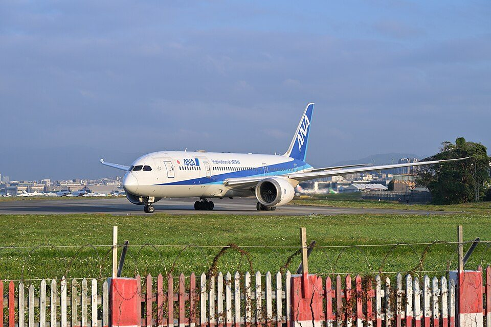

トップ › 社会人お得技ノート
社会人お得技ノート⑤ 交通・旅行
- 調査日:
- 更新日:
- 社会人お得技ノート 5/8
要点まとめ
- JR往復割引は2026年3月終了。えきねっと「トクだ値1・14」も2026年9月に発売終了[1][2]
- 青春18きっぷ3日間10,000円・5日間12,050円（12月11日〜1月11日）[3]
- ETC平日朝夕割引はETCマイレージサービス登録が必須。休日割引は3連休などが除外日[4][5]
- 九州ふっこう応援割は1泊以上の旅行が50%（熊本・鹿児島は60%）割引。予算が尽きれば終了[6]
富士山を背に走る東海道新幹線（N700系）
ラベル: 新制度・改正 改悪・注意 終了
JR・新幹線
終了 往復割引は廃止。往復乗車券も2026年3月13日で発売終了
片道601km以上で1割引の往復割引は廃止[1]
くわしく
- JRグループの往復乗車券・連続乗車券は2026年3月13日で発売終了[1]
- 片道601km以上で1割引になる往復割引もなくなった[1]
- 往復は片道乗車券2枚で購入する[1]
- 学割・ジパング倶楽部などは、1枚の割引証で片道の割引乗車券を2枚まで同時に買える[1]
JR各社の株主優待割引券
割引率や使える区間は会社ごとに違う
くわしく
- JR東日本の株主優待割引券は、エリア内の運賃・料金が片道40%割引[7]
- JR西日本の株主優待鉄道割引券は、1枚で運賃・料金が5割引（片道）[8][9]
- JR西日本の券は他の割引との併用不可[8][9]
- JR西日本の券は山陽新幹線にも使えるが、東海道新幹線には使えない[8][9]
- JR東海の株主優待割引券は1枚で1割引、2枚同時使用で2割引[10]
- 優待券を手に入れる費用も含めて比較したい（筆者の見解）
東京〜名古屋の新幹線を安く乗る方法
「ぷらっとこだま」は9,000円〜の価格変動型の旅行商品[11]
「のぞみ」普通車指定席の定価
変更前：11,300円→変更後：11,880円
2027年7月1日購入分から
東京〜名古屋の新幹線（普通車） （調査日時点の料金）[12][13][14][11]
のぞみ 指定席（定価）11,300円
EX早特21（のぞみ）10,370円
EX早特7（ひかり・こだま）9,900円
ぷらっとこだま9,000円〜
ぷらっとこだまは価格変動型の旅行商品
くわしく
- 「のぞみ」普通車指定席の定価は11,300円[12]
- 2027年7月1日購入分からは11,880円[12]
- 「ぷらっとこだま」は9,000円〜の価格変動型の旅行商品[11]
- スマートEXの「EX早特7」（ひかり・こだま用）は9,900円[14]
- スマートEXの「EX早特21」（のぞみ用）は10,370円[13]
終了 えきねっと「トクだ値1・14」終了。期間限定50%割引あり
「トクだ値1」「トクだ値14」は2026年9月に発売終了[2]
くわしく
- 東北・上越・北陸新幹線などの「トクだ値1」は2026年9月29日に発売終了[2]
- 「トクだ値14」は9月16日に発売終了[2]
- 期間限定の「新幹線eチケット（トクだ値スペシャル28）」は50%割引[15]
- 対象は2026年12月7日〜17日の平日乗車分（席数限定）[15]
- 発売は乗車日の1か月前の10時から、28日前の23時50分まで[15]
青春18きっぷ（2026年冬季）
3日間用は10,000円、5日間用は12,050円[3]
くわしく
- 利用期間は2026年12月11日〜2027年1月11日[3]
- 発売は11月27日から[3]
- 自動改札を利用できる[3]
- 1枚を複数人で共用することはできない[3]
大都市近郊区間内の特例（いわゆる大回り乗車）
実際の経路にかかわらず最も安い経路で運賃を計算[16]
くわしく
新制度・改正 大人の休日倶楽部ミドルが片道101km以上で5%割引に
2026年3月14日から片道101km以上で5%割引に[18]
くわしく
- 大人の休日倶楽部ミドルは満50〜64歳が対象[19]
- 年会費は2,624円（入会後1年間無料）[19]
- JR東日本・JR北海道のきっぷが5%割引[19][18]
- 2026年3月14日から、条件が「片道101km以上」に緩和された[18]
- ジパング倶楽部（満65歳以上）は年会費3,840円[20]
- 全国のJR線を片道101km以上利用すると、年20回まで20〜30%割引[20]
- ジパング倶楽部はGW・お盆・年末年始は対象外[20]
JR東日本のオフピーク定期券は約15%安く、ポイント10%
通常の通勤定期より約15%安い定期券[21]
くわしく
- オフピーク定期券は通常の通勤定期より約15%安い[22][21]
- JRE POINTの付与率が10%に上がる[21]
- ポイント10%の対象は2026年3月14日〜2027年3月31日の購入分[21]
- ポイントにはSuicaの登録とエントリーが必要[21]
- 2026年3月の運賃改定で、通勤定期は12.0%値上げされた[22][21]
地下鉄・飛行機
東京の地下鉄の1日券
メトロ・都営共通1日乗車券は1,100円（2026年3月14日〜）[23]
くわしく
- 東京メトロ・都営地下鉄共通1日乗車券は1,100円（小児550円）[23]
- この価格は2026年3月14日から[23]
- 3月25日からはQRコード版も使える[24]
- 東京メトロ24時間券は700円[25]
マイルで行き先おまかせの旅（JAL「どこかにマイル」）
往復7,000マイルで、目的地はシステムが決める[26]
くわしく
- JALの「どこかにマイル」は往復7,000マイル[26]
- 行き先候補の中から、システムが目的地を決める[26]
- ANAの「今週のトクたびマイル」は2026年10月27日の告知分から一時休止[27]
- トクたびマイルの再開時期は未定[27]
ANAの株主優待で国内線が片道約50%割引
ANAは番号1つで国内線の片道1区間が約50%割引[28]

ANAのボーイング787
くわしく
- ANAの株主優待番号は、番号1つで国内線の片道1区間が約50%割引[28]
- ANAの番号は株主本人以外も使える[28]
- ANAは便の混雑状況によっては使えない場合がある[28]
ANAの「ユース」運賃（25歳以下）
搭乗日当日の0時から出発20分前まで予約・購入できる[29]
くわしく
車
ETCマイレージサービスに登録して高速料金の割引を受ける
平日朝夕割引は事前登録が必要で、還元は最大50%[4]
くわしく
- 平日朝夕割引の対象は6〜9時・17〜20時[4]
- 平日朝夕割引はETCマイレージサービスへの事前登録が必要[4]
- 月の利用回数に応じて、最大50%が翌月還元される[4]
- 深夜割引は現在、0〜4時の走行で約30%割引（見直しの時期は未定）[31]
- 休日割引は3連休などが除外日[5]
- 2026年11月以降の除外日は、11月21〜23日、12月26・27日[5]
- さらに2027年1月1〜3日、1月9〜11日、3月20〜22日も除外日[5]
改悪・注意 自賠責保険料が2026年11月から値上げ
自賠責保険の基準料率が平均6.2%引き上げ[32]
くわしく
ときどき運転するなら1日単位の自動車保険
東京海上日動「ちょいのり保険」は800円〜（24時間単位）[35]
くわしく
- 例えば東京海上日動の「ちょいのり保険」は24時間単位[35]
- 保険料は800円〜[35]
- スマホやコンビニで加入できる[35]
- 最長連続7日間まで入れる[35]
JAFのロードサービスは「人」に付く
会員本人に付くので、レンタカーや友人の車も対象[36]
くわしく
- JAFのロードサービスは会員本人に付く[36]
- レンタカーや友人の車、同乗しているだけの場合も対象[36]
- 家族会員の年会費は1名2,000円[36]
- 会員優待施設は全国約44,000カ所[36]
旅行・おでかけ
九州ふっこう応援割（2026年10月〜）
1泊以上の旅行・宿泊が50%割引（熊本・鹿児島は60%）[6]
くわしく
- 九州での1泊以上の旅行・宿泊料金が50%割引[6]
- 熊本・鹿児島は60%割引[6]
- 上限は宿泊のみ・交通付き1泊で2万円など[6]
- 期間は県ごとに違う[6]
- 予算がなくなり次第終了[6]
岩手県「おでんせ！いわて旅割キャンペーン」
第3弾のクーポン配布は2026年12月1日から[43]
くわしく
- 宿泊予約サイトで配るクーポンで、県内の宿泊が割引になる[43]
- 割引は宿泊費の1/2まで。県北・沿岸は1人最大7,000円、ほかは5,000円[43]
- 第3弾の対象は、2027年1月4日から2月28日チェックアウトまでの宿泊[43]
- 第2弾のクーポンは、すべての予約サイトで予定枚数を配り終えた[43]
改悪・注意 京都市の宿泊税が1人1泊最大10,000円に
宿泊料金に応じて1人1泊200円〜10,000円[37]
くわしく
- 京都市は2026年3月1日から宿泊税を改定[37]
- 税額は宿泊料金に応じて1人1泊200円〜10,000円[37]
- 宿泊料金の表示に含まれない場合もあるので、予約時に確認したい[37]
健保組合の保養所・宿泊補助
健保組合によっては保養施設を割安に使える[38]
くわしく
- 直営や契約の保養施設を割安に使える組合がある（例：関東ITソフトウェア健康保険組合）[38]
- 制度は組合ごとに違うので、自分の健保のサイトを確認したい[38]
国立の美術館・博物館の常設展が無料になる日。ぐるっとパスもお得
国立西洋美術館の常設展は、原則毎月第2日曜日が無料[40]
くわしく
- 国立西洋美術館は、5月18日と11月3日（文化の日）も常設展が無料[40]
- 東京国立博物館の2026年の無料観覧日（5月19日・9月21日・11月3日）は終了[39]
- 企画展・特別展は有料[39][40]
- 「ぐるっとパス2026」は2,500円[41]
- 東京を中心とする107施設の入場券・割引券が、最初の利用日から2か月間使える[41]
海外での支払いは手数料を確認
Wiseデビットカードは海外事務手数料がかからない[42]
くわしく
- 例えばWiseデビットカードは、海外でのカード利用に海外事務手数料がかからない[42]
- 両替手数料は別途かかる[42]
- ATM引き出しは月25,000円まで無料[42]
今回確認できなかった点
- LCCのセール、Revolutの手数料、クレジットカード付帯の海外旅行保険、ふるさと納税の旅行クーポンの有効期限、新潟の旅行支援は、公式情報を確認できなかったため掲載していません。
出典（43件）
閲覧日はいずれも2026年11月1日
- 往復乗車券及び連続乗車券の発売終了日等について（JRグループ）
- 「えきねっと」で発売するWEB限定割引商品の発売・見直し等について（2026年8月7日）（JR東日本・JR北海道）
- 青春18きっぷ（JR西日本 JRおでかけネット）
- 平日朝夕割引 よくあるご質問（NEXCO西日本）
- 休日割引（NEXCO西日本）
- 九州ふっこう応援割（観光庁）
- 株主優待割引券について（よくある質問）（えきねっと）
- 株主優待鉄道割引券のご案内（JR西日本）
- 株主優待制度Q&A（JR西日本）
- 株主優待制度（JR東海）
- ぷらっとこだま（JR東海ツアーズ）
- 「のぞみ」・「みずほ」号の指定席特急料金及びグリーン料金の見直し等について（2026年10月16日）（JR東海・JR西日本）
- EX早特21 発売額（スマートEX）
- EX早特7 発売額（スマートEX）
- 新幹線・在来線特急が50％割引（JR東日本（JREメディア））
- 大都市近郊区間内のみをご利用になる場合の特例（JR東海）
- 乗車券の有効期間（JR東海）
- 大人の休日倶楽部の割引条件の変更について（よくある質問）（えきねっと）
- 大人の休日倶楽部（JR東日本（JREメディア））
- ジパング倶楽部（JR西日本）
- JR東、15%割安な「オフピーク定期券」に10%のポイント付与（2026年2月13日）（Impress Watch）
- 東日本旅客鉄道株式会社の旅客運賃の上限変更認可について（国土交通省）
- 共通企画乗車券の発売額変更について（2026年1月30日）（東京都）
- 企画乗車券がQRコードで利用可能に（2026年1月30日）（東京都）
- 「東京メトロ24時間券」値上げ（乗りものニュース）
- JAL「どこかにマイル」に関する記事（2025年12月8日）（Aviation Wire）
- 今週のトクたびマイル（ANA）
- ANA国内線ご優待（ANAホールディングス）
- ユース（運賃ルール）（ANA）
- 「ユース」運賃（ANA）
- 深夜割引（NEXCO西日本）
- 自賠責保険基準料率 届出のご案内（損害保険料率算出機構）
- 自賠責保険基準料率（損害保険料率算出機構）
- 自動車検査登録総合ポータル 継続検査（国土交通省）
- ちょいのり保険（東京海上日動火災保険）
- 入会メリット・費用について（JAF（日本自動車連盟））
- 宿泊税について（京都市）
- 令和8年度 直営・通年保養施設 実施要領（関東ITソフトウェア健康保険組合）
- 観覧料・無料観覧日（東京国立博物館）
- ご利用案内（国立西洋美術館）
- ぐるっとパス2026（東京都歴史文化財団）
- Wiseデビットカード 手数料（Wise）
- おでんせ！いわて旅割キャンペーン（いわて旅割キャンペーン事務局）（閲覧日 2026年11月5日）
写真・画像の出典（2件）
- 富士山を背に走る東海道新幹線（N700系）
写真: Charlie fong／Wikimedia Commons（CC BY-SA 4.0）
- ANAのボーイング787
写真: 4300streetcar／Wikimedia Commons（CC BY 4.0）